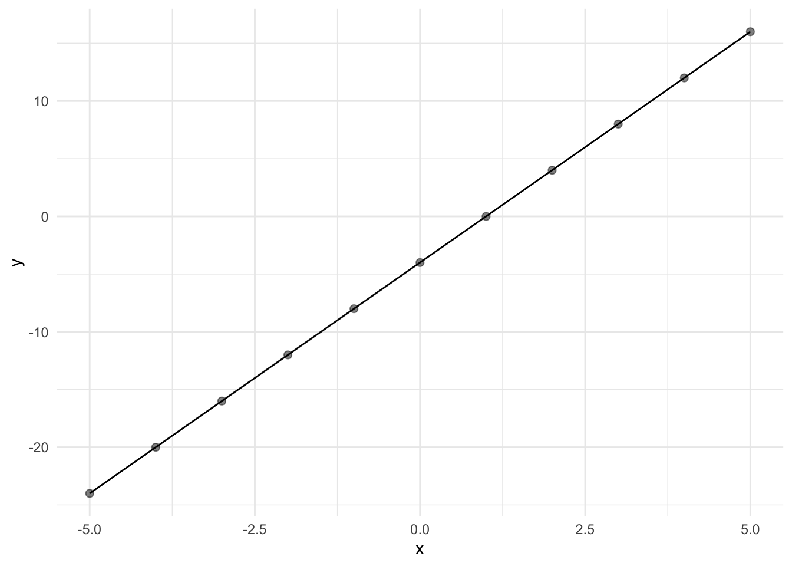
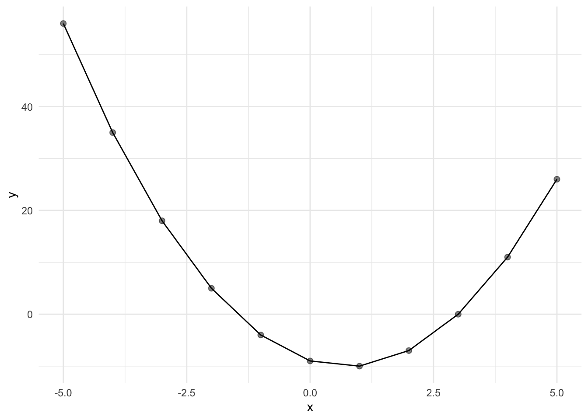
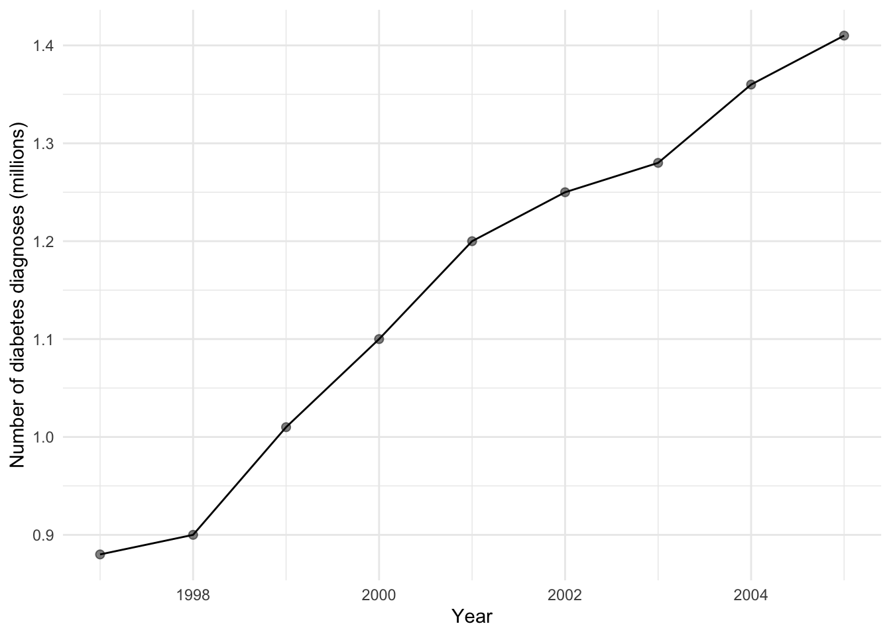
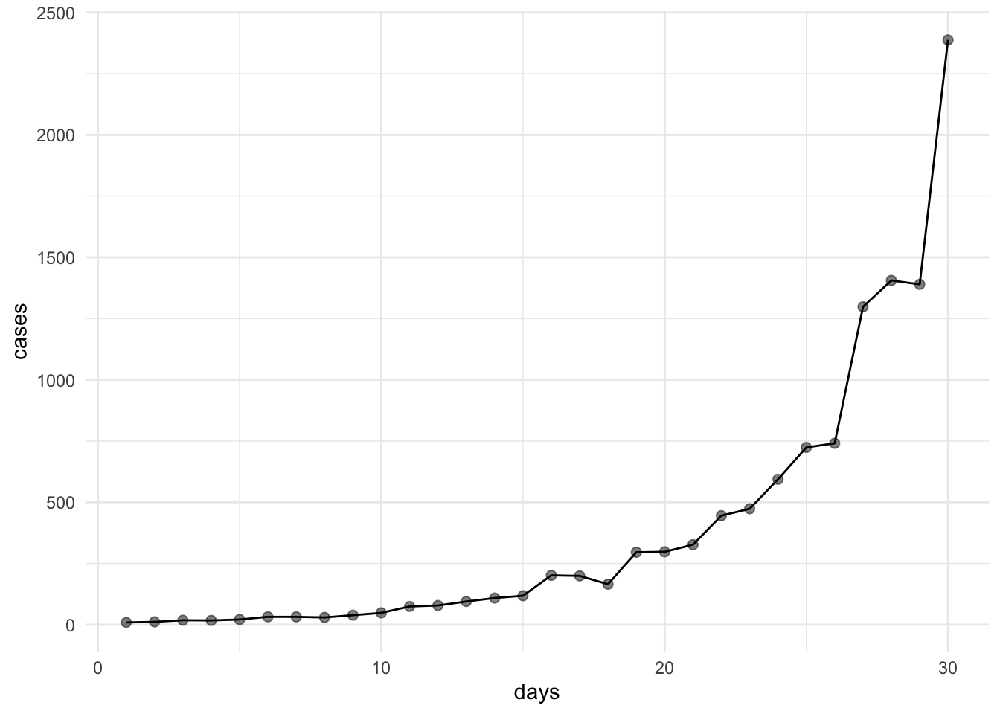
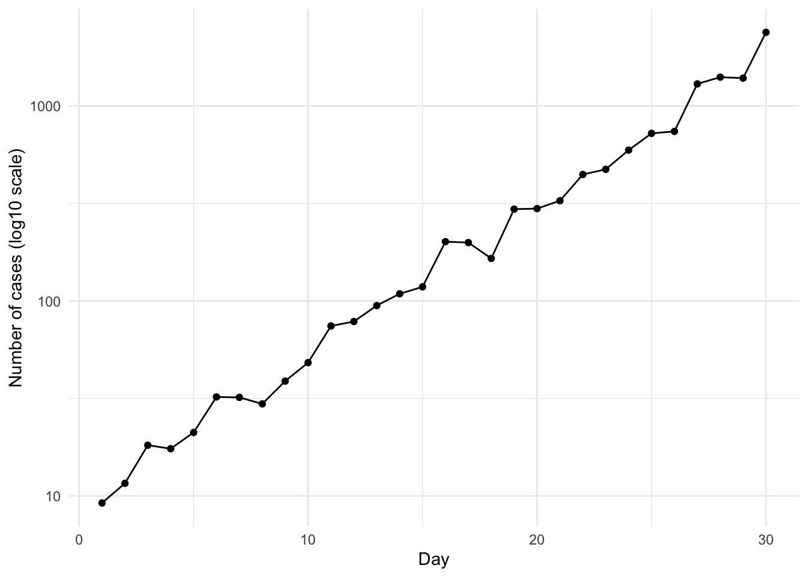

num_list = c(4.35, 8.65, 2.95, 12.45, 6.65, 7.55, 9.75)
sum_num_list = sum(num_list)
print(sum_num_list)[1] 52.35October 24, 2026
A variable is a symbol (e.g., X) that can assume any of a prescribed set of values, called the domain of the variable. A variable that can only assume a single value is known as a constant (e.g., Avogadro’s constant: 6.02214076 × 10²³). On the other hand, if a variable can theoretically assume any value between two given values, then it is a continuous variable, otherwise it is called a discrete variable.
For example, for the Number G gallons (gal) of water in a washing machine, the variable G can assume any value between 0 gal (no water) to the capacity of the washing machine. As such, the variable G is continuous. By contrast, for the Number B of books on a library shelf, the variable B is discrete as it can only take on discrete values such as 0,1,2,3,… to the maximum number of books that can fit on the shelf.
What about for Country C in Europe? In this case, the variable C is a discrete (nominal) variable and can take on values such as France or Germany, which may be represented numerically (e.g., France = 1, Germany = 2).
Some rounding procedures are better than others, particularly in minimising cumulative rounding errors. For example, take the numbers 4.35, 8.65, 2.95, 12.45, 6.65, 7.55 and 9.75, assuming that these values have been rounded to two decimal places (three to four significant figures). In summing them directly, we obtain:
[1] 52.35We can also first round the numbers to the nearest tenth according to the “round-to-even” convention (which is default in R but can be interrupted by floating-point precision, hence we have to write a custom rounding fucntion to get a traditional “round-to-even” output ). Using this procedure, any digit before 5 is rounded to the nearest even integer. In applying this rounding procedure, we obtain:
[1] 4.4 8.6 3.0 12.4 6.6 7.6 9.8Summing these “rounded-to-even” numbers, gives us:
[1] 52.4Another rounding method “round-half-up” is to increase the digit before 5. In applying this procedure, we get:
[1] 52.7We can see here that using the “round-half-up” method produced a result of 52.7, while the “round-to-even” method produced a result of 52.4, which has a smaller cumulative rounding error relative to the direct sum of 52.35.
Another way to think about this is to consider the original values: 4.35, 8.65, 2.95, 12.45, 6.65, 7.55 and 9.75. Given that each of these values has been rounded to two decimal places, they represent any number between a lower and upper boundary (e.g., 4.35 represents any number between 4.345 and 4.355, assuming the round-to-even method). If we sum the lower boundaries of each of these numbers, we get 52.315, while summing the upper boundaries gives us 52.385. Thus, the true sum of these values must lie within:
\[ 52.315 < S < 52.385 \]
While both the “round-half-up” and “round-to-even” methods produced sums outside this range (52.7 and 52.4, respectively), the “round-to-even” method produced a smaller cumulative rounding error relative to the direct sum (52.35) compared to the “round-half-up” method. This is one reason why the former is generally preferred, as it helps reduce systematic rounding bias by allowing upward and downward rounding errors to cancel each other out. However, the “round-to-even” method does not guarantee that cumulative rounding errors will cancel out, particularly if rounding errors consistently occur in one direction (either upwards or downwards).
We can write functions in R that allow us to perform mathematical operations. Base R also allows for vectorisation whereby an operation is applied to each elements in a vector, without having to specify loops.
For example, take the linear equation
\[ Y = 4X - 4 \]
This equation can be written as a function \(Y = F(X)\) , where to each value that X can assume, there corresponds one and only one value of Y.
In R, this operation can be written as a function:
# Computes a linear transformation over an entire vector simultaneously
linear_func <- function(X) {
Y <- 4*X - 4
return(Y)
}
# Generate a number sequuence to which we apply the linear transformation
num_seq <- c(-5:5)
# Apply the fucntion to the number sequence
linear_eq_result <- linear_func(num_seq)We can also graph the equation as follows:

We can also graph a quadratic equation, which will give us a parabolic curve.
# Computes a quadratic transformation over an entire vector simultaneously
quadratic_func <- function(X) {
Y <- 2*X^2 - 3*X - 9
return(Y)
}
# Generate a number sequuence to which we apply the quadratic transformation
num_seq <- c(-5:5)
# Apply the fucntion to the number sequence
quadratic_eq_result <- quadratic_func(num_seq)
# Combine X and Y into a dataset to make plotting easier
df_quadratic_plot <- data.frame(x = num_seq, y = quadratic_eq_result)
ggplot(data = df_quadratic_plot, aes(x = x, y = y)) + geom_point(size = 2, alpha = 0.5) + geom_line() + theme_minimal()
Plots are also helpful to visualise and explore relationships between variables in real-world scenarios. For example, let’s simulate a small dataset showing the rise in new diabetes diagnoses from 1997 to 2005.
year <- c(1997:2005)
millions <- c(0.88,0.90,1.01,1.10,1.20,1.25,1.28,1.36,1.41)
# Combine variables into df to make it easier to plot
diabetes_rate <- data.frame(year = year, millions = millions)
# Plot the data as a time series to clearly show the trend of rising diabetes diagnoses from 1997 to 205
ggplot(data = diabetes_rate, aes(x= year, y = millions)) + geom_point(size = 2, alpha = 0.5) + geom_line() + xlab("Year") + ylab("Number of diabetes diagnoses (millions)") + theme_minimal()
But what if we have data that grows exponentially? For example, if we are investigating the growth of an infectious disease over 30 days, and we assume that the number of cases grows by approximately 20% each day. By simulating the data, we get:
days cases
1 1 9.193657
2 2 11.592751
3 3 18.192955
4 4 17.463728
5 5 21.142061
6 6 32.183459
7 7 31.997311
8 8 29.638577
9 9 38.788725
10 10 48.261291
11 11 74.396800
12 12 78.421199
13 13 94.685369
14 14 108.784378
15 15 118.121141
16 16 201.430703
17 17 199.219568
18 18 165.183832
19 19 295.768336
20 20 297.607636
21 21 326.634782
22 22 445.252505
23 23 473.313839
24 24 593.862146
25 25 723.822767
26 26 740.718022
27 27 1298.043781
28 28 1405.675282
29 29 1389.734697
30 30 2387.453219If we plot this data on a regular linear scale, we obtain:

Notice that due to the large variation in y-values, the data points on the left-hand side of the plot appear compressed, making it difficult to distinguish differences between individual observations. For example, the absolute increase between days 29 and 30 is approximately 997 cases, compared to an increase of only 3 cases between days 1 and 2. Consequently, the larger absolute differences towards the later days of the epidemic are much easier to visualise, while the smaller differences during the earlier days are less apparent.
However, when examining epidemic growth, we may be interested not only in absolute differences but also in relative changes (e.g., percentage increases) over time. One way to better visualise these relative changes is to use a semi-log plot, where the y-axis is represented on a logarithmic scale. Unlike a linear scale, where equal distances represent equal absolute differences, equal distances on a logarithmic scale represent equal ratios. This makes it easier to compare proportional changes across observations of different magnitudes.

When the number of cases is plotted on a logarithmic scale, the previously curved relationship appears approximately linear. This suggests that the number of cases is increasing at a relatively constant proportional rate over time, consistent with exponential growth. Although the absolute increase in cases becomes progressively larger, the relative rate of increase remains approximately constant, as reflected by the roughly linear trend on the semi-log plot.